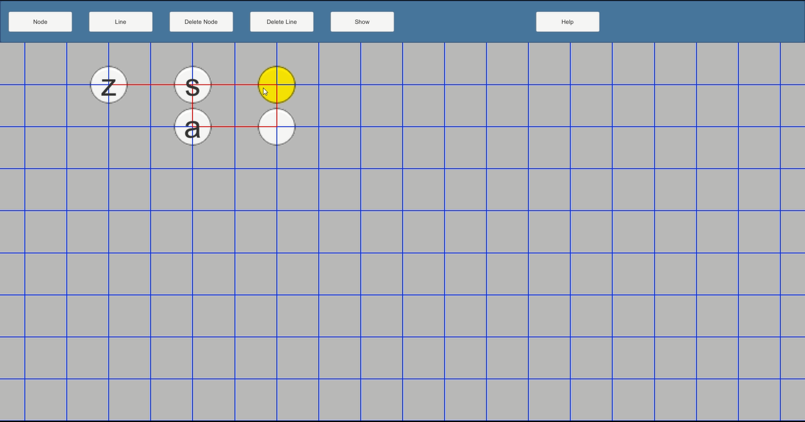
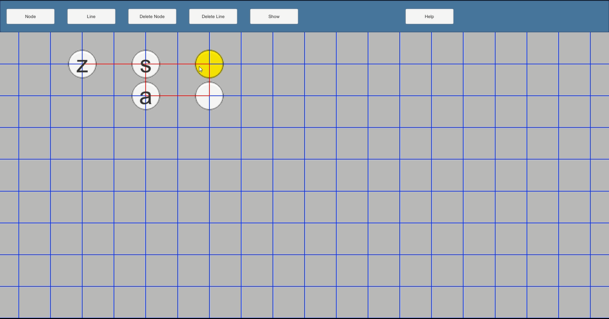
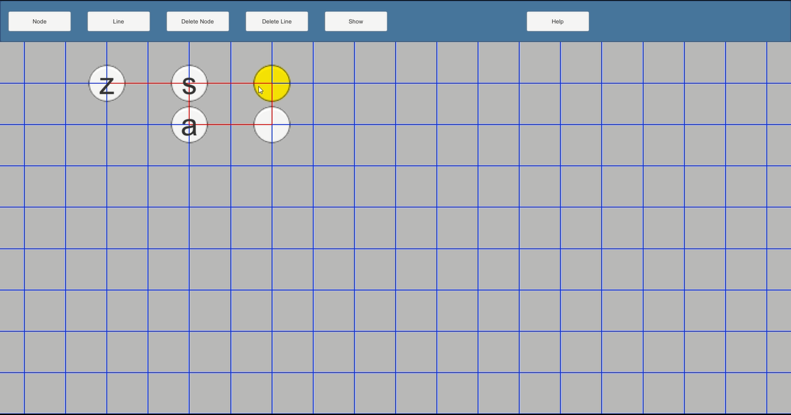

Group 6 of CMSC 447 fall 2019 at the University of Maryland Baltimore County
Group Member:Marshall, ArishMersinger, Andrew JOshry, Yitzhas DTao, KechengWeng, Zhenbang

In DF/BF Visualization, user can create search map by add/delete nodes, add/delete line between two nodes.
After user create search map, user can click show button to go to animation scene.
If user's search map is incorrect, it will provides different visual feedback to help user fixed it.
User also can click help button go to help scene to read the FAQ and guide.
After user go to animation scene, application will provide search tree.
User can chose search type that they want (Depth-First Search, Breadth-First Search)
User can click top bottons to play search animation, pasuse animation, resume animation, or go through animation step by step.
After user play search animation, the search procedure will automatically print out.